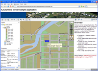
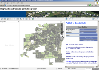
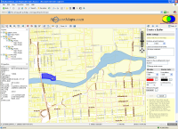
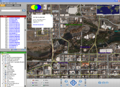
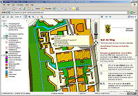
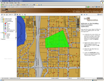
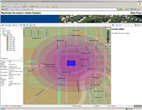

Sample Applications
If you have built a site using MapGuide Open Source you'd like to share with the community, please email the link along with a short description and we'll post it below!
|  | Demonstrates how to construct a MapGuide application using the Web Extensions
APIs. The application is based on municipal data from the City of Sheboygan.
This application is offered in one of three flavors:
|
|  | Demonstration of MapGuide integration with Google Earth. Query property information and export the results for immediate display in Google Earth. Includes option to download the application source code. |
|  | This application demonstrates the integration of external database searching tools with MapGuide Open Source. Use the Parcel Search Tool to search the tax assessor database and click on a record to zoom to and highlight that property. Parcel polygons are also hyperlinked to the live County web tax assessment reports. This application was written with the MapGuide Open API using ASP.NET (C#). |
|  | If you have Google Earth installed, this link will directly open the demo data area. Continue to zoom into the area within the red square to see new data. This site demonstrates the capability of streaming MapGuide Open Source data to Google Earth as network link information. As you pan and zoom within Google Earth, new data is fetched via the MapGuide Open Source and FDO API's based on the viewers bounding box and the information sent back to be viewed as an overlay. This application was written entirely in ASP.NET (C#). |
|  | GISkit, located in Houten, The Netherlands, develops CAD and GIS applications for the local Dutch market. GISkit also offers a service for local governments to publish their maps to the internet using Mapguide Open Source. This site shows a typical Spatial Plan for the municipality of Schiedam. |
|  | Call before you dig, is an application created by Geomap, Canada that shows how MapGuide can be used to verify that a site is suitable for excavation by checking against existing utilities that might be affected by the excavation. The application is available as in the following flavors |
 |
This site has been created by Pacific Alliance Technologies, to demonstrate Web GIS using MapGuide Open Source. |
|  | This site has a several commonly used scripts and API code samples for MapGuide. The source code for the samples are available at the site. |